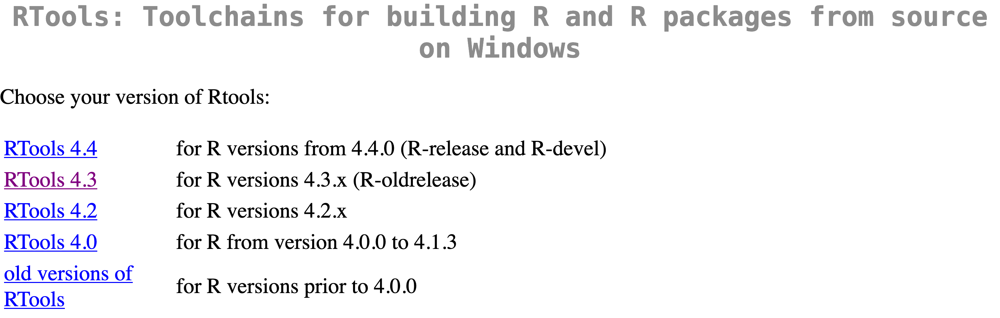

R.version.string[1] "R version 4.4.3 (2025-02-28)"A lista a seguir apresenta alguns erros e warnings que apareceram na aula (seja por dúvida presencial, seja no chat do Google Meet).
Para pessoas que utilizam o sistema operacional Windows, a aviso (warning) abaixo pode aparecer em alguns contextos:
WARNING: Rtools is required to build R packages but is not currently installed.
Please download and install the appropriate version of Rtools before proceeding:
https://cran.rstudio.com/bin/windows/Rtools/
Instalando pacote em ‘C:/Users/.../AppData/Local/R/win-library/4.4’
(como ‘lib’ não foi especificado)Para que esse aviso não apareça mais, você pode instalar o Rtools no seu computador. O RTools é um software (não é um pacote do R), portanto você precisa fazer o download da versão compatível com a versão do R que você está utilizando, e instalar no seu computador.
Para fazer o download, acesse o link https://cran.rstudio.com/bin/windows/Rtools/, e escolha a versão do RTools compatível com a versão do R que você está utilizando:

Para consultar a versão do R que você está utilizando, você pode rodar o seguinte comando no console do R:
O erro a seguir ocorre quando o usuário tenta instalar um pacote sem aspas. O correto é colocar o nome do pacote entre aspas.
Error in eval(call, envir = parent.frame()): object 'janitor' not foundA função deve receber o nome do pacote entre aspas, pois é um texto:
O erro a seguir ocorre quando tentamos carregar um pacote que não foi instalado anteriormente. Para resolver, precisamos instalar o pacote.
Para que consiga acessar, é necessário instalar o pacote, e depois carregá-lo:
O erro a seguir ocorre quando tentamos acessar um objeto que não consta no painel Environment. Existe alguns motivos para isso acontecer:
O objeto não foi criado (provavelmente precisa executar o código que cria o objeto);
O objeto existe no painel Environment, mas estamos tentando acessá-lo com o nome incorreto.
No exemplo a seguir, o código gerará um erro pois o objeto que estamos tentando acessar ainda não foi criado:
Após criar o objeto, conseguimos utilizá-lo:
O erro could not find function ocorre quando tentamos acessar uma função que não está sendo encontrada. Isso pode acontecer por alguns motivos:
A função faz parte de um pacote que não foi carregado (precisamos carregar o pacote antes);
A função foi escrita de forma incorreta (por exemplo, com letras maiúsculas ou minúsculas incorretas).
No exemplo a seguir, queremos limpar o nome das colunas do data frame iris:
Sepal.Length Sepal.Width Petal.Length Petal.Width Species
1 5.1 3.5 1.4 0.2 setosa
2 4.9 3.0 1.4 0.2 setosa
3 4.7 3.2 1.3 0.2 setosa
4 4.6 3.1 1.5 0.2 setosa
5 5.0 3.6 1.4 0.2 setosa
6 5.4 3.9 1.7 0.4 setosaO código a seguir gerará um erro pois a função clean_names() faz parte do pacote janitor, mas o pacote não foi carregado:
Para corrigir, precisamos carregar o pacote janitor:
No exemplo a seguir, o código gerará um erro pois a função length() está escrito de forma incorreta:
Error in lenght(letters): could not find function "lenght"Para corrigir, precisamos escrever a função corretamente:
Ao importar um arquivo, é importante que o caminho esteja correto. Caso contrário, o código gerará um erro.
# O caminho abaixo está incorreto, esse arquivo não existe
# no nosso projeto:
sidra_4092 <- read_csv("SIDRAR.csv")Error: 'SIDRAR.csv' does not exist in current working directory ('/home/runner/work/curso_r_intro_202409/curso_r_intro_202409').Corrigindo o arquivo, o código funcionará:
Rows: 27,000
Columns: 13
$ `Nível Territorial (Código)` <dbl> …
$ `Nível Territorial` <chr> …
$ `Unidade de Medida (Código)` <dbl> …
$ `Unidade de Medida` <chr> …
$ Valor <dbl> …
$ `Unidade da Federação (Código)` <dbl> …
$ `Unidade da Federação` <chr> …
$ `Trimestre (Código)` <dbl> …
$ Trimestre <chr> …
$ `Variável (Código)` <dbl> …
$ Variável <chr> …
$ `Condição em relação à força de trabalho e condição de ocupação (Código)` <dbl> …
$ `Condição em relação à força de trabalho e condição de ocupação` <chr> …O erro a seguir ocorre quando tentamos importar um arquivo que está corrompido. Nesse caso, precisamos baixar o arquivo novamente.